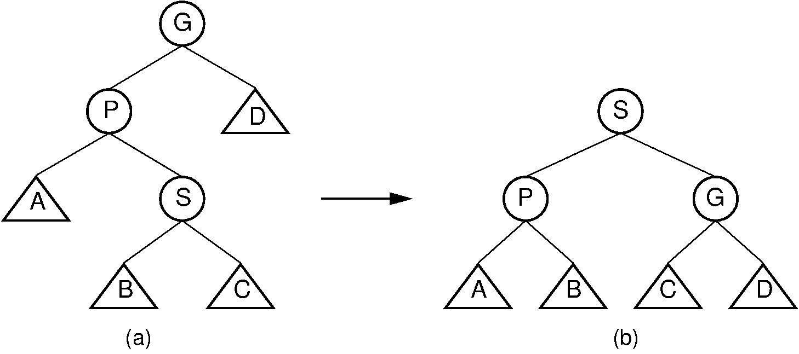
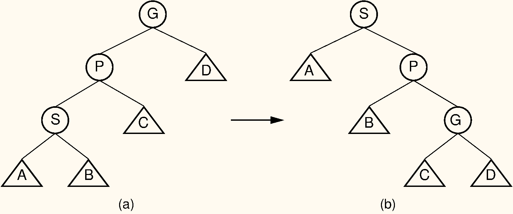

10.6* Splay trees
AVL trees and red-black trees are both extensions of binary search trees, BST. By storing some additional information in each node they can maintain their balance. (AVL trees store the height or balance, and red-black trees store the colour.)
A splay tree is also a kind of self-balancing BST, but it does not store any additional information in the nodes. Instead it uses alternative implementations of the operations for searching, inserting, and deleting. Every time you call one of these operations, the tree is transformed to become a little more balanced. By doing these transformations in a smart way, we can ensure that the operations have amortised logarithmic complexity. More formally, running a sequence of n operations on a tree of size n will take O(n\log(n)) time – meaning that each operation will be logarithmic on average.
Like the AVL tree, the splay tree is not actually a distinct data structure, but rather reimplements the BST insert, delete, and search methods to improve the performance of a BST. The goal of these revised methods is to provide guarantees on the time required by a series of operations, thereby avoiding the worst-case linear time behaviour of standard BST operations. No single operation in the splay tree is guaranteed to be efficient. Instead, the access rules of the splay tree guarantee that a series of m operations will take O(m \log(n)) time for a tree of n nodes whenever m \geq n. Thus, a single insert or search operation could take O(n) time. However, m such operations are guaranteed to require a total of O(m \log(n)) time, for an average cost of O(\log(n)) per access operation. This is a desirable performance guarantee for any search-tree structure.
Unlike the AVL tree, the splay tree is not guaranteed to be height balanced. What is guaranteed is that the total cost of the entire series of accesses will be cheap. Ultimately, it is the cost of the series of operations that matters, not whether the tree is balanced. Maintaining balance is really done only for the sake of reaching this time efficiency goal.
The splay tree access functions operate in a manner reminiscent of the move-to-front rule for self-organising lists (see Section 7.1), and of the path compression technique for managing a series of Union/Find operations (see Section 9.3). These access functions tend to make the tree more balanced, but an individual access will not necessarily result in a more balanced tree.
Whenever a node S is accessed (that is, when S is inserted, deleted, or is the goal of a search), the splay tree performs a process called splaying. Splaying moves S to the root of the BST. When S is being deleted, splaying moves the parent of S to the root. As in the AVL tree, a splay of node S consists of a series of rotations. A rotation moves S higher in the tree by adjusting its position with respect to its parent and grandparent. A side effect of the rotations is a tendency to balance the tree. There are three types of rotation.
Note that even if you only search for a value, the tree structure is changed because the found node will be splayed to the root. This is a big difference between splay trees and the search trees we have looked at previously.
10.6.1 Splaying
A single rotation is performed only if S is a child of the root node. The single rotation is illustrated by Figure 10.17. It basically switches S with its parent in a way that retains the BST property. The splay tree single rotation is in fact identical to a normal single rotation as described in Section 10.2.1.
![Figure 10.17: Splay tree single rotation. This rotation takes place only when the node being splayed is a child of the root. Here, node S is promoted to the root, rotating with node P. Because the value of S is less than the value of P, P must become S ’s right child. The positions of subtrees A, B, and C are altered as appropriate to maintain the BST property, but the contents of these subtrees remains unchanged. (a) The original tree with P as the parent. (b) The tree after a rotation takes place. Performing a single rotation a second time will return the tree to its original shape. Equivalently, if (b) is the initial configuration of the tree (that is, S is at the root and P is its right child), then (a) shows the result of a single rotation to splay P to the root.](images/SearchTrees-AVL-LeftRotate-1.svg)
Unlike the AVL tree, the splay tree requires two types of double rotation. Double rotations involve S, its parent (call it P), and S ’s grandparent (call it G). The effect of a double rotation is to move S up two levels in the tree.
ZigZag
The first double rotation is called a zigzag rotation. It takes place when either of the following two conditions are met:
- S is the left child of P, and P is the right child of G.
- S is the right child of P, and P is the left child of G.
In other words, a zigzag rotation is used when G, P, and S form a zigzag. The zigzag rotation is illustrated by Figure 10.18, but it is in fact is identical to the normal double rotation discussed in Section 10.2.1.

ZigZig
The other double rotation is known as a zigzig rotation. It takes place when either of the following two conditions are met:
- S is the left child of P, which is in turn the left child of G.
- S is the right child of P, which is in turn the right child of G.
Thus, a zigzig rotation takes place in those situations where a zigzag rotation is not appropriate. The zigzig rotation is illustrated by Figure 10.19.

Note that zigzag rotations tend to make the tree more balanced, because they bring subtrees B and C up one level while moving subtree D down one level. The result is often a reduction of the tree’s height by one. Zigzig promotions and single rotations do not typically reduce the height of the tree; they merely bring the newly accessed record toward the root.
10.6.2 Searching in a splay tree
The splay tree’s search operation is identical to searching in a BST. However, once the value has been found, it is splayed to the root. This means that when you search for a value the tree structure is changed. This is a big difference between splay trees and the search trees we have looked at previously.
Splaying a node involves a series of double rotations until the node reaches either the root or the child of the root. Then, if necessary, a single rotation makes it the root. This process tends to re-balance the tree. Regardless of balance, splaying will make frequently accessed nodes stay near the top of the tree, resulting in reduced access cost. Proof that the splay tree meets the guarantee of O(m \log(n)) is beyond the scope of our study.
Example: Searching in a splay tree
Consider a search for value 89 in the splay tree of Figure 10.20 (a). The splay tree’s search operation is identical to searching in a BST. However, once the value has been found, it is splayed to the root. Three rotations are required in this example. The first is a zigzig rotation, whose result is shown in figure (b). The second is a zigzag rotation, whose result is shown in figure (c). The final step is a single rotation resulting in the tree of figure (d). Notice that the splaying process has made the tree shallower.
![Figure 10.20: Example of splaying after performing a search in a splay tree. After finding the node with key value 89, that node is splayed to the root by performing three rotations. (a) The original splay tree. (b) The result of performing a zigzig rotation on the node with key value 89 in the tree of (a). (c) The result of performing a zigzag rotation on the node with key value 89 in the tree of (b). (d) The result of performing a single rotation on the node with key value 89 in the tree of (c). If the search had been for 91, the search would have been unsuccessful with the node storing key value 89 being that last one visited. In that case, the same splay operations would take place.](images/SplayEx.png)